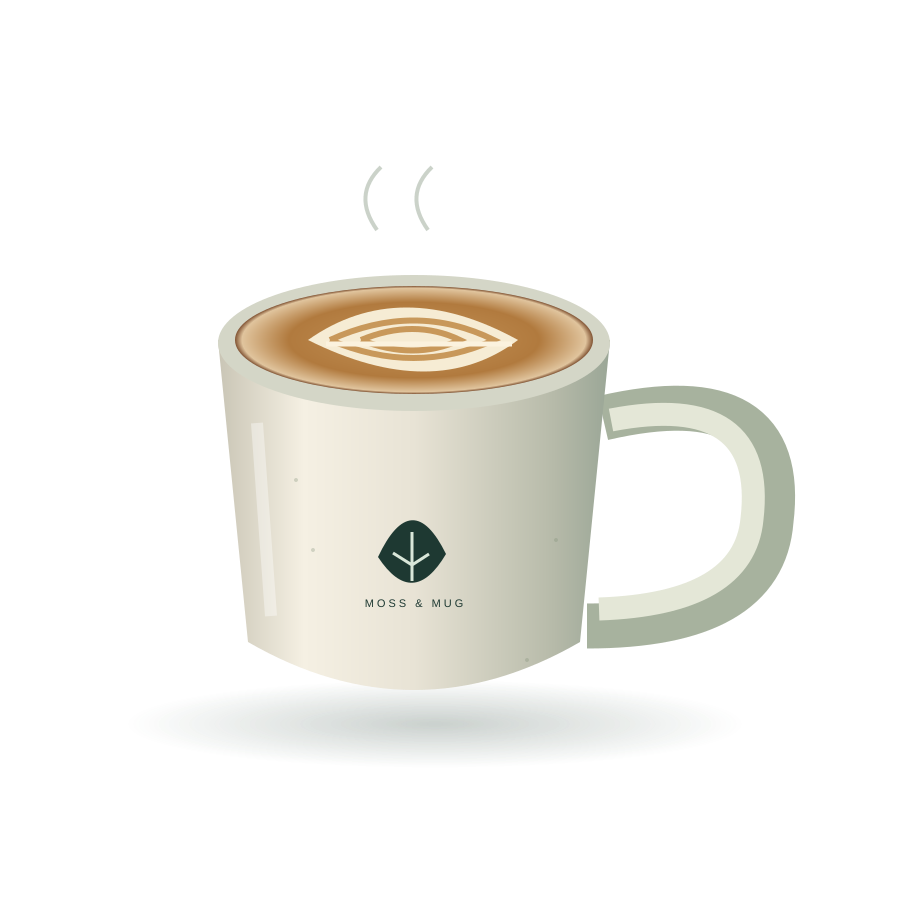

GOOD THINGS TAKE THEIR TIME.
把一杯日常，
调成自己喜欢的模样。
杯壁的暖色，奶泡的纹理，以及浓缩的份数，都能成为一次小小的选择。试配盘可以收下不同搭配，也可以随时修改。

GOOD THINGS TAKE THEIR TIME.
杯壁的暖色，奶泡的纹理，以及浓缩的份数，都能成为一次小小的选择。试配盘可以收下不同搭配，也可以随时修改。
不会。新增、修改、移除都只改变当前页面内存，刷新后全部清空；不会发给任何门店。
杯型对应两张不同陶杯结构的原创渲染；奶基与份数改变配方摘要和风味创作说明。全部为界面演示，不是营养或饮用建议。